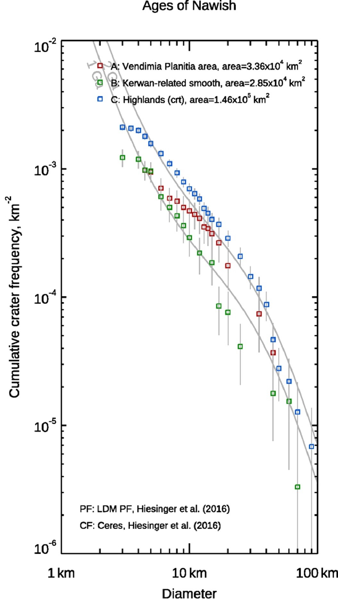

Planetary data and geoscientific map development with
demo and discussion
held at the 4th Planetary Data Workshop, 18-20 June 2019, Flagstaff - AZ
Alessandro Frigeri
Istituto di Astrofisica e Planetologia Spaziali - IAPS
Istituto Nazionale di Astrofisica - INAF
Rome, Italy
alessandro.frigeri@inaf.it / @afrigeri
Development started in 2002 by Gary Sherman
- peculiarities: GUI / Plugins / iPython interface
- License: GNU GPL
- website:http://www.qgis.org
- development: http://github.com/qgis
- support through multi-sponsorhip
Built-in OGC services
OGC services accessible from QGIS:- Catalogue Service for the Web (CSW)
- Web Coverage Service (WCS)
- Web Feature Service (WFS)
- Web Feature Service - Transactional (WFS-T)
- Web Map Service (WMS)
QGIS is a project within OSGEO
QGIS for planetary data handling
and
Planetary geoscientific mapping

QGIS for planetary mapping: elements
- Digitizing plugins
- Symbology
- Crater count tool
Digitizing interface
Interpretative mapping requires a lot of user-input. Stream digitizing support is critical with modern input devices
Digitizing with beePen plugin
BeePen plug-in by Mauro Alberti
latest version implements smoothing + simplify chain
Digitizing with bezier plugin
Bezier Editing by Takayuki Mizutani
works directly on exisitng vector layers
Geologic symbols lib and design for QGIS
Users can download the existing library and contribute with currently missing symbolshttps://github.com/afrigeri/geologic-symbols-qgis
Circle Craters Plugin
Provides a 3-point crater digitizing tool in QGIS, exporting the data into a Craterstat (Michael et al, 2013) compatible file
- Developed for QGIS 2.6 by Sarah Braden
- LPSC 2015 abstract #1816,e-poster
- ported to Python3 / QGis 3.6
Circle Craters Plugin in action (QGIS 3.6)
Circle Craters: output from Craterstat
A working example
https://doi.org/10.1016/j.icarus.2018.08.015made in
Article's GIS data download
DTM downloadImage mosaic download
Craters > 4km
full GIS dataset from the article is published here: https://github.com/afrigeri/nawish_gis
that's it!
... and that's only the beginning!
A thread on QGIS for planetary mapping has been opened on the openplanetary.org forum
A special thanks goes to the all the QGIS/FOSS4G developers and contributors